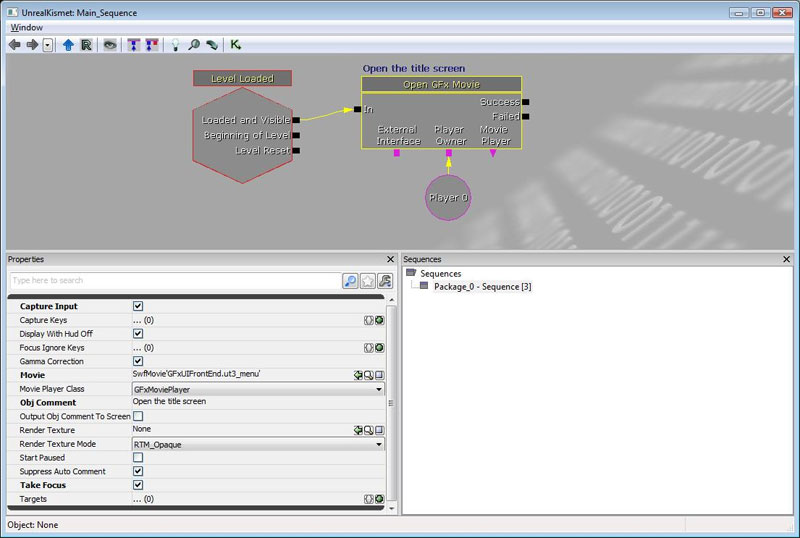
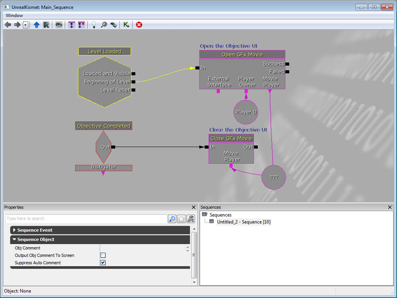
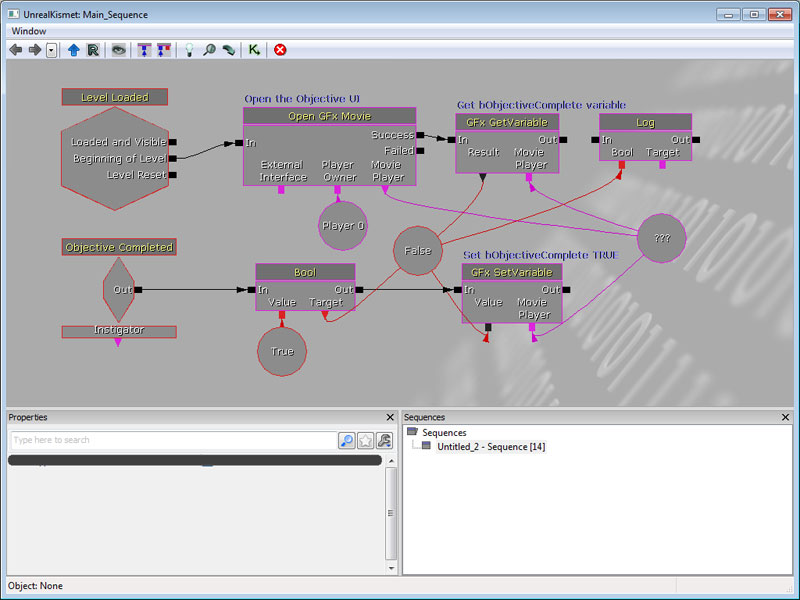

UDN
Search public documentation:
ScaleformContentGuide
日本語訳
中国翻译
한국어
Interested in the Unreal Engine?
Visit the Unreal Technology site.
Looking for jobs and company info?
Check out the Epic games site.
Questions about support via UDN?
Contact the UDN Staff
中国翻译
한국어
Interested in the Unreal Engine?
Visit the Unreal Technology site.
Looking for jobs and company info?
Check out the Epic games site.
Questions about support via UDN?
Contact the UDN Staff
Scaleform Content Guide
Overview
The Scaleform GFx integration in Unreal Engine 3 enables the use of interfaces and menus built in Adobe Flash Professional to be used as heads-up displays (HUDs) and menus. This document is a content and design-focused guide for artists or level designers using the Scaleform GFx system. It will cover aspects of creating UIs using Scaleform and Flash as well as how to use those within levels in Unreal Engine 3.
Working with CLIK Components
Adding new CLIK Object to your Library
To add new CLIK objects to your Library, you have two options: Copy an object out of a prebuilt file, or assign the GFx class to a movieclip.Copy and paste method
- In Adobe Flash Professional CS4, open CLIK_Components.fla, located in \UnrealEngine3\Development\Flash\CLIK\components.
- Select one of the objects in the Library, copy it, and paste it into your file.
- Open the Component Inspector (Shift+F7) to view the properties and values associated with the CLIK object you brought into your stage.
Assigning CLIK class to an existing movie clip
You are also able to assign any CLIK class to a movie clip. This is useful if you add custom functionality, or just need a simple button without state changes.- Right click the movie clip in the Library and choose Properties.
- Enable Export for ActionScript via the check box.
- In the class field, enter which class you want to use. (e.g gfx.controls.Button)
- Click OK.
- Right click once again on the object, but open "Component Definition...".
- In the "class" field, enter the same class assigned in the Properties: gfx.controls.Button.
- Click OK.
Duplicating CLIK Objects - a Checklist
Duplicated components within your library will not retain their class and component class information, and will also have some auto-naming issues with the linkage identifier as well. Here is quick checklist to ensure that the CLIK object is set up properly after duplication, or initial setup:- The CLIK class needs to be defined in its properties, and has Export for Action Script checked. When you duplicate within Adobe Flash, these properties are not copied from the original Library object you are duplicating.
- Component definition also needs to be set, during duplication this information is not copied over from the original.
- Ensure its identifier has the same name as the object name.
Content Best Practices
Scene Architecture
Using Kismet with Scaleform
Opening a Movie in Kismet
To open a movie from Kismet, simply create a new Open GFx Movie action (New Action > GFx UI > Open GFx Movie) and assign the SWF to the Movie property and the movie player class that should own the movie to the Movie Player Class property, as shown below:  The player to open the movie for should be linked to the Player Owner variable link. Properties- CaptureInput
- If checked, the movie will by default capture input for the keys listed in the CaptureKeys array.
- CaptureKeys
- If CaptureInput is checked, the keys listed in this array will be sent to the GFx movie.
- DisplayWithHUDOff
- Should this movie be displayed even if the HUD is not shown (useful for most non-HUDuser interface movies).
- Movie
- Reference to the movie (SWF file imported into the engine as an asset) that you want to play.
- MoviePlayerClass
- (Advanced) If there is an UnrealScript class that encapsulates functionality for this movie that you wish to use, select it from this list. Otherwise, GFxMoviePlayer is the default option.
- RenderTexture
- (Advanced) If you don't want to render this movie to the full screen, but rather to a render to texture resource so it can be used in the world, specify it here. If nothing is specified, the movie will render to the screen.
- StartPaused
- If checked, the movie will not play by default, and will have to manually be started by script.
- TakeFocus
- If checked, the GFx movie will take control focus of the screen when it is opened.
Closing a Movie in Kismet
To close a movie through Kismet, you can use the Close GFx Movie action, though you first need to have saved a reference to the movie to close in an Object variable. This reference is obtained from the Movie Player variable link of the Open GFx Movie action when opening a new movie.  Properties- Unload
- If checked, the movie is unloaded from memory when it is closed.
Calling an ActionScript function in Kismet
It is possible, in Kismet, to call an ActionScript method on an open SWF movie. For example, say the following ActionScript function was in a movie that was opened:
function myActionScriptMethod(MyString:String, MyBool:Boolean)
{
// Do something interesting!
}
- Type
- This specifies what type of parameter you wish to pass in that slot. The relevant types are AS_String (S), AS_Boolean (B), and AS_Number (N).
- S
- String data you wish to pass.
- B
- Boolean data you wish to pass.
- N
- Number data you wish to pass.
Receiving ActionScript calls from GFx in Kismet
ActionScript can use FSCommands to trigger events in Kismet. These work the same as other events in kismet. For example:
fscommand("myFSCommand");
Getting and Setting Values
Values of variables belonging to objects within Scaleform movies opened through Kismet can be accessed or set using the GFx GetVariable and GFx SetVariable actions.  Properties- Variable
- The name of the variable to get or set the value for.
Fonts in Scaleform
!"#$%&'()*+,-./0123456789:;<=>?@ABCDEFGHIJKLMNOPQRSTUVWXYZ[\]^_`abcdefghijklmnopqrstuvwxyz{|}~
€„ˆ›Œ‘’“”–—˜™›œ¡¢£¨©ª«®°²³´¹º»¿ÀÁÂÃÄÅÆÇÈÉÊËÌÍÎÏÑÒÓÔÕÖØÙÚÛÜßàáâãäåæçèéêëìíîïñòóôõöøùúûüýÝ¥§Ÿ…
A;a;C'c'C(c(D(d(E;e;E(e(L'l'??N'n'N(n(O"o"R(r(S's'ŠšT(t(U*u*U"u"Z'z'Z.z.Žž
??????????????????????????????????????????????????????????????????
!"#$%&'()*+,-./0123456789:;<=>?@ABCDEFGHIJKLMNOPQRSTUVWXYZ[\]^_`abcdefghijklmnopqrstuvwxyz{|}~ €„ˆ›Œ‘’“”–—˜™›œ¡¢£¨©ª«®°²³´¹º»¿ÀÁÂÃÄÅÆÇÈÉÊËÌÍÎÏÑÒÓÔÕÖØÙÚÛÜßàáâãäåæçèéêëìíîïñòóôõöøùúûüýÝ¥§Ÿ…A;a;C'c'C(c(D(d(E;e;E(e(L'l'??N'n'N(n(O"o"R(r(S's'ŠšT(t(U*u*U"u"Z'z'Z.z.Žž???????????????????????????????????????????????????????????????????A-a-A(a(??E-e-E(e(E.e.G(g(G,g,I-i-I;i;I.?K,k,L,l,L(l(N,n,O-o-O(o(ŒœR'r'R,r,S's'S,s,T,t,U-u-U*u*U;u; S,s,T,t,
°
ª
- UFonts: Unreal bitmap fonts - Always fast to render! Support distance fields (monochrome only, great for scaling up, but cannot preserve sharp corners). RGBA bitmap (not as good at scaling, full color)
- Embed vector font (fonts_en.swf, fonts_*.swf) - Sometimes fast to render. Dynamic font cache can lead to performance issues; not updated efficiently. No support for RGBA.
- System font - Just like embedded font, but looked up from OS. Great for PC games that require full localization support.
Localization/GFxUI.int file maps the symbol name of the font to the actual font to use following one of these rules depending on which font path you decide to use:
- UFonts - path to UFont resource; e.g. GearFonts.MyFont
- Vector font - the name of the vector font exported from fonts_en.swf; e.g. Arial, Bold
- System font - TODO
[Fonts] NormalFont=Bitstream Vera Sans BoldFont=Bitstream Vera Sans,Bold SmallFont=Bitstream Vera Sans TitleFont=Bitstream Vera Sans,Bold
Common Font Error
> Missing font "$NormalFont" in "_level0.PauseMenuSP.PartyPanelLoaderPanel.PartyPanel.PPListItem1.PlayerIcon.textField". Search log: > Searching for font: "$NormalFont" > Movie resource: "$NormalFont" not found. > Imports : "$NormalFont" not found. > : "../UI_Common/gfxfontlib.swf", "..\UI_Common\UI_Common_Assets.swf". > Exported : "$NormalFont" not found. > Searching GFxFontProvider: "$NormalFont" not found. > Font not found. > Error: Resource for font id = 12 is not found in text field id = 52, def text = 'OPTION' > Error: Resource for font id = 12 is not found in text field id = 52, def text = 'OPTION' > Error: Resource for font id = 12 is not found in text field id = 59, def text = 'textField'
- UI_Common/fonts_en.fla - The fonts and glyphs for the language
- UI_Common/gfxfontlib.fla - The library SWF that defines the font symbols ($NormalFont, $LargeFont, etc)
- UI_Common/UI_Common_Assets.fla - Our shared common asset library of base widgets
- UI_FrontEnd/UI_CommonFrontEndAssets.fla - Our shared front end assets
$NormalFont symbol and other things that the error spew says you're missing.
Testing and Debugging Scenes
Enabling or disabling of GFx rendering for debugging
During the transition from the old UI system to the new GFx UI system, it may be useful to disable GFx UI rendering if the new UI is being built concurrently with people using the old UI. Because of this, we added a simple boolean for debugging that allows you to disable the GFx UI from rendering and taking input. To change it, modify the following bool in your game's Engine.ini file:[Engine.GameViewportClient] bDebugNoGFxUI=false
Engine exec functions for testing
There are a few debugging functions added to make life easier for artists looking at SWF movies in the engine. Unless otherwise specified, these function work on the topmost movie currently being rendered by GFx.- GFxGotoAndPlay Path FrameLabel - Jumps the specified movie clip to the specified frame label, and plays.
- GFxGotoAndStop Path FrameLabel - Jumps the specified movie clip to the specified frame label, and stops.
- GFxInvoke Path FunctionName - Calls an ActionScript function with FunctionName on the specified path.
- GFxRestartMovie - Restarts playback of the topmost movie being rendered.